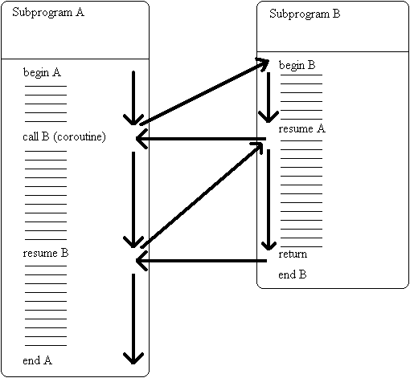

Async programming: asyncio
Created for
Iva E. Popova, 2021,

Asynchronous vs Synchronous vs Parallel Execution
Asynchronous vs Synchronous vs Parallel Execution
Overview
- Synchronous Execution
- The code is executed sequentially. When a function is called, the next command waits until the function finished its work.
- Asynchronous Execution
- A call to asynchronous function allows to continue to execute next command instead of waiting for a response.Once the called function returns a response, the program goes back to that function call and processes the response.
- Parallel Execution
- Processing can be done simultaneously via multiple threats, handled by the different CPU's threats.
Coroutines
Coroutines
Overview
Asynchronous programming is achieved by using coroutines
{kind=link}
image by wikipedia
Subroutines vs Coroutines
- Subroutine: An instance of a subroutine have single entry point and only returns once. A subroutine does not hold state between invocations
- Coroutine: can exit by calling other coroutines, which may later return to the point where they were invoked in the original coroutine. A coroutine instance holds state
- Synchronous and Asynchronous functions/callables are different types - you can't just mix and match them
Basics of Python asyncio library
Basics of Python asyncio library
Overview
- The asyncio library (pep 3153) provides asynchronous i/o in python 3
- A coroutine is defined by keyword async
- The result of calling it is a coroutine object
async def couroutineA():
pass
coroutineA_worker = coroutineA()
print(coroutineA_worker)
Using coroutines
- Inside a coroutine, we can use
var = await couroutineB()to suspend the coroutineA and wait for the coroutineB to return. - A coroutine object may be created but isn't run until an event loop is running.
async def couroutineA():
await coroutineB()
The EventLoop
- The event loop is the central execution device provided by asyncio. It provides multiple facilities, including
- Registering, executing and cancelling delayed calls (timeouts).
- Creating client and server transports for various kinds of communication.
- Launching subprocesses and the associated transports for communication with an external program.
- Delegating costly function calls to a pool of threads.
Async vs Sync example
Async vs Sync example
Sync subroutines execution
import time
def subroutine_A():
print('subroutine_A starts!')
time.sleep(3)
print('subroutine_A completed!')
def subroutine_B():
print('subroutine_B starts!')
time.sleep(2)
print('subroutine_B completed!')
def main():
subroutine_A()
subroutine_B()
time_start = time.time()
main()
time_end = time.time()
print(f'Took {time_end - time_start}')
Async coroutines execution
import asyncio
import time
async def coroutine_A():
print('coroutine_A starts!')
await asyncio.sleep(3)
print('coroutine_A completed!')
async def coroutine_B():
print('coroutine_B starts!')
await asyncio.sleep(2)
print('coroutine_B completed!')
def main():
loop = asyncio.get_event_loop()
tasks = asyncio.gather(
coroutine_A(),
coroutine_B()
)
loop.run_until_complete(tasks)
loop.close()
time_start = time.time()
main()
time_end = time.time()
print(f'Took {time_end - time_start}')
An async consumer-producer example
An async consumer-producer example
The pseudo code
var q := new queue
coroutine produce
loop
while q is not full
create some new items
add the items to q
yield to consume
coroutine consume
loop
while q is not empty
remove some items from q
use the items
yield to produce
The Python code
import asyncio
import random
async def produce(queue, queue_capacity):
item = 1;
while queue_capacity:
# produce an item
print('producing {}/{}'.format(item, queue_capacity))
item +=1
# simulate i/o operation using sleep
await asyncio.sleep(random.random())
# put the item in the queue and decrease queue_capacity
queue_capacity -=1
await queue.put(item)
# indicate the producer is done
await queue.put(None)
async def consume(queue):
while True:
# wait for an item from the producer
item = await queue.get()
if item is None:
# the producer emits None to indicate that it is done
break
# process the item
print('consuming item {}...'.format(item))
# simulate i/o operation using sleep
await asyncio.sleep(random.random())
queue_capacity = 10
loop = asyncio.get_event_loop()
queue = asyncio.Queue(loop=loop)
producer_worker = produce(queue, queue_capacity)
consumer_worker = consume(queue)
loop.run_until_complete(asyncio.gather(producer_worker, consumer_worker))
loop.close()
A pure async http request
- You can not use the standard
requestlibrary, as it is synchronous. - You can, if you executed in different thread, by BaseEventLoop.run_in_executor()
- The module aiohttp provides asynchronous functionality for such cases
import asyncio
import aiohttp
@asyncio.coroutine
def do_request():
response = yield from aiohttp.request(
'GET', 'http://google.com',
)
return response
loop = asyncio.get_event_loop()
loop.run_until_complete(do_request())
Resources
Resources
These slides are based on
customised version of
framework